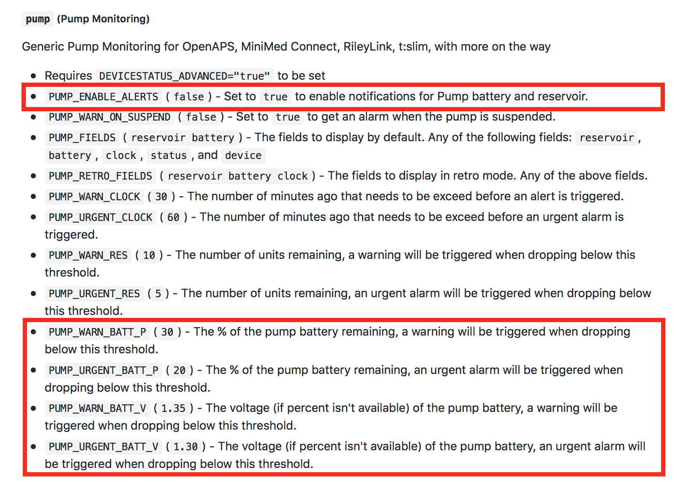

Pump Battery⌁
One common confusion point for new Loop users is how to interpret their pump's battery levels and whether they need to change their pump batteries based on which pieces of information.
Discharge Curves⌁
There are generally two different types of AAA batteries that we use in these Medtronic pumps; alkaline or lithium.
To understand pump battery levels, you first need to know a little about battery discharge curves. It's not a hard concept...basically how a battery dies over time as it is used or sits in a drawer. More technically said, a battery discharge curve is the measure of volts that a battery puts out over time. Batteries start at a higher voltage output and slowly that volatge output degrades over time (or use) until the battery no longer provides enough "ummph" to keep the electronic gadget going. BUT, alkaline batteries and lithium batteries have different discharge curves due to the chemistry inside them, and the curves can be slightly different depending on environment (temperature) and battery manufacturer.
Alkaline batteries have a relatively steady voltage drop over time, as shown below. Notice the shape of the curve has a significant amount of time in the 1.3 to 1.2 volts range, and a relatively smooth decline to about 1.2 volts.

Lithium batteries have a much steadier voltage output over time, as shown below. Notice how the shape of the curve is relatively flat for a large portion of the battery life before suddenly off around 1.3 volts.

What does the above information mean in terms of Looping? A lithium battery at 1.3v is going to have a much quicker time to death than an alkaline battery sitting at 1.3v. You might only get a couple hours of looping left when a lithium battery is at 1.3v, but a alkaline battery at 1.3v might go another several days. So when we talk about setting alarm levels in either system, your battery type is an important consideration.
Medtronic Pump Battery Level Indicator⌁
If you read Medtronic's literature, it will tell you to use Energizer alkaline batteries in their pumps. Why would that be? Hint: the answer doesn't mean that Duracell batteries are inherently worse than Energizer or that lithium batteries won't work in Medtronic pumps.
The answer is all about the accuracy of their little pump battery level indicator on their pump's screen. Medtronic calibrated their pump battery level indicator to:
- Energizer alkaline batteries
- Normal (non-Loop) uses
- Temperatures between 37°F (3°C) to 104°F (40°C).
In other words, Medtronic ran experiments to see exactly how long an Energizer alkaline battery will last in normal pump use and made their own discharge curve. They programmed their pump battery level indicator to change from 4 bars to 3 bars to 2 bars to 1 bar based on that particular discharge curve.
However, Loop users are slightly more demanding on the pump's battery/voltage than simply having the insulin delivery. We are also asking for the pump to perform radio communications, in addition to delivering insulin. That radio communications needs a slightly higher voltage than the typical "normal" pump use. So while a non-Looper might be ok running their pump until a voltage of about 1.12 for insulin delivery, radio communications might stop at a voltage output of about 1.17. If you experiment with your Looping pump, you'll find Loop will turn red from failed pump comms before the pump actually fails at insulin delivery. This difference between "failure" voltages needs to be considered when determining how much useful battery life is left for a pump battery.
In summary, that little pump battery indicator on the Medtronic pump screen is ONLY useful if you are:
- not using the pump for Looping,
- using Energizer alkaline batteries, and
- in the temperature environment similar to their testing.
Loop users should not rely on their Medtronic pump screen's pump battery indicator, and instead use the Loop's pump battery level indicator.
Loop's Pump Battery Level Indicator⌁
Keeping the information about battery discharge curves in mind, Loop developers tested various battery brands and types to develop discharge curves for Loop users. These discharge curves form the basis of the pump battery level indicator found in the top right of the Loop's main display screen and the pump battery notifications provided by the Loop app. The pump battery level indicator will also report in %.
- For x23 and x54 model users, the Loop's pump battery level will move in 25% increments.
- For x15 and x22 model users, the Loop's pump battery level will move in discrete % increments.
Using information of the battery type selected and the pump model being used, the Loop's pump battery level notifications are designed to give the user about 8 hours of notice before pump communications are likely to fail. The Loop user should have some additional time after pump comms fail before actual insulin delivery would stop.
Nightscout Pump Battery Display⌁
The Nightscout information regarding pump battery levels will depend on pump model being used.
- If you use an x23 or x54 pump and MySentry, the pump levels are reported as percent to NS, because that's how MySentry reports the data to Loop. The packets use 100%, 75%, 50%, and 25% increments, and the Loop's main display matches the NS pump display.
- If you use an x22 or x15 pump, the pump levels are reported as voltage readings to NS because Loop has to specifically ask the pump for its voltage reading. The Loop's main display will show pump battery level as discrete %, not the individual voltage measurement.
- No matter what pump you are using, you can always get a the current pump battery's voltage by using the RileyLink's
Read Pump Statuscommand. - The extra communications effort for non-MySentry model pumps will mean slightly shorter battery life vs. MySentry model pumps.
Nightscout Pump Battery Alarms⌁
The Nightscout alarms are based on the Heroku settings that you have input specifically. If you don't specifically set them, Nightscout will use the default settings for pump battery alerts as shown below:

Nightscout pump battery levels, if you leave things at default installation, will not trigger alarms. If however you add an setting of PUMP_ENABLE_ALERTS to true, you will receive pump battery notifications according to the levels shown in the parenthesis above. For example, your x23 pump is reporting its levels in percent, therefore you'd receive a warning yellow alarm at 30% and an urgent red alarm at 20%. Your x22 pump however is reporting its levels at voltage readings, therefore you'd receive a warning yellow alarm at 1.35v and an urgent red alarm at 1.30v.
Are the default NS alarm levels going to work for you? The answer depends on what type of battery level you are using, what model pump you are using, and how much advance notification you want to receive before needing to change a pump battery. There is a bit of personal preference and experimentation to finding what works for you.
For x22 or x15 pump users, the NS alert settings that may need to be adjusted are the ones based on voltage.
Generally speaking, for a x22 or x15 pump using alkaline batteries, the default NS alarm levels will be too early to be useful and lead you to changing out your battery too frequently. Alkaline batteries can go to low 1.2s or high 1.1s before Looping starts to have communication problems. How much lower than the default voltage 1.35/1.30 alarm levels you want to go will depend on how far in advance you want to be warned about an upcoming battery change.
If however, you are using a x22 or x15 pump with lithium batteries, the default 1.35v/1.30v alarm levels may be completely appropriate. Remember how the lithium battery curves at the start of this discussion died off quickly around 1.3v? You won't get hardly any heads-up notice for a lithium battery if you set the alarm below 1.3v.
For x23 or x54 pump users, the NS alert settings that may need to be adjusted are the ones based on percentage settings.
Alkaline and lithium batteries should have automatically had their percentage-remaining based on the correct battery type in your Loop settings. So, generally speaking the default NS alert levels don't generally need adjusting. However, if you are using lithium batteries, the drop off between 75% to 25% can be quite dramatic and not be easy to anticipate (especially if the drop happens overnight).
As an alternate method of tracking pump battery changes, you could use the insulin age (IAGE) plug-in to anticipate your pump battery changes as well. For example, after tracking pump battery life on my 723 using energizer batteries lithium batteries for the last several months, I know that we get about 15 days plus a handful of hours. The amount of hours more beyond 15 days varies depending on how much we've interacted with the pump buttons directly, whether we've looped the full 15 days solid, and if the pump has been in extreme weather (cold weather can sap pump battery life). By tracking the pump battery changes with NS's careportal "insulin cartridge change", I can see in advance if we are nearing an overnight on a 15 day battery and decide to change batteries before overnight to prevent any middle-of-night battery issues.
- Lithium batteries will get signifcantly longer life than an alkaline battery.
- Experiment and track your particular pump model and battery type to understand what NS settings will work best for you.
- Do not rely on the pump's on-screen pump battery indicator, especially when using lithium batteries.